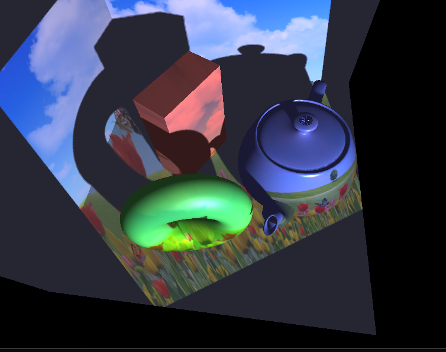

Lighting a scene with image from a light projector
Table of Contents
About
The shadow mapping algorithm is a technique for generating real-time shadows. It starts by rendering the scene from the perspective of the light source and saving the result in a depth buffer called the shadow map. When rendering the scene from the camera's viewpoint, each fragment's depth value relative to the light is compared to the corresponding value in the shadow map. If the fragment's depth is greater, it is determined to be in shadow.
In this project the following points were implemented:
- Using shadow mapping, render the scene as if lit by an image projected from the light source. If a fragment is not in the shadow, it takes the color of the image texture.
- Percentage-closer filtering (PCF) to smooth shadow boundaries.
Image to project:
Shadow map (depth values when light source is set as viewpoint):
Results:

Installation
Do note that this was a school assignment and part of the code was provided as a template by the course.
The code and instructions for installation are located on GitHub at https://github.com/clarlzx/ShadowMapping.
Credits
NUS CS4247 Teaching Team